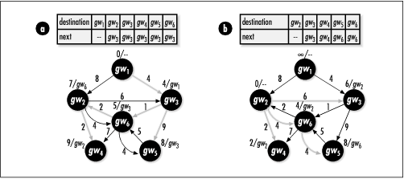

16.7 Shortest Paths Example:
Routing Tables
One application in which shortest
paths play an important role is routing data between networks in an
internet. Routing is the process of
making informed decisions about how to move data from one
point to another. In an internet, this is accomplished by
propagating small sections of the data, or packets,
along interconnected points called gateways. As each
packet passes through a gateway, a router looks at where the packet
eventually needs to go and decides to which gateway it should
be sent next. The goal of each router is to propagate a packet
closer and closer to its final destination.
In order to
propagate a packet closer to its destination, each router
maintains information about the structure, or topology,
of the internet. It stores this information in a routing table. A routing table
contains one entry for each gateway the router knows how to
reach. Each entry specifies the next gateway to which packets
destined for another gateway should be sent.
So that packets are continually sent along
the best route possible, routers periodically update their
routing tables to reflect changes in the internet. In one type
of routing, called shortest path first
routing, or SPF routing,
every router
maintains its own map of the internet so that it can update
its routing table by computing shortest paths between itself
and other destinations. Its map is a directed, weighted graph
whose vertices are gateways and whose edges are connections
between the gateways. Each edge is weighted by the performance
most recently observed for a connection. From time to time,
routers exchange information about topology and performance
using a protocol designed especially for this purpose.
Example
16.4 is a function, route,
that
computes the information necessary to update one entry in a
routing table using SPF routing. The function accepts the list
of path information returned in the paths
argument of shortest. It uses this information to determine
to which gateway a router should send a packet next to reach
its destination most effectively.
To complete an entire table for a specific
gateway, we first call shortest
with the gateway passed as start. Next, for
each destination to be included in the routing table, we call
route with the destination
passed as destination. We pass the same
function for match as was provided to graph_init for the graph from which
paths was generated. The route function follows parent
pointers in paths from the destination back to
the gateway and returns the best choice for moving a packet
closer to its destination in next. The vertex
returned in next points to the actual vertex
in paths, so the storage in
paths must remain valid as long as
next is being accessed.
Figure
16.5a illustrates the computation of a routing table for a
router at gw1 in the internet
shown (modeled using a graph similar to the one in Figure
16.3). Figure
16.5b illustrates the computation of the routing table for
a router at gw2 . Notice how
the shortest paths are different depending on where we start
in the internet. Also, notice that in Figure
16.5b there is no way to reach gw1, so there is no entry for it in
the table.

The runtime complexity of route is O
(n2), where n
is the number of gateways in paths. This is
because we look up in paths the parent of each
vertex between the destination we are interested in and the
starting point in the internet. If the shortest path between
us and the destination contains every gateway in
paths, in the worst case we may have to search
the list of gateways n times to
find every parent.
Example 16.4.
Implementation of a Function for Updating Entries in Routing
Tables /*****************************************************************************
* *
* -------------------------------- route.c ------------------------------- *
* *
*****************************************************************************/
#include <stdlib.h>
#include "graphalg.h"
#include "list.h"
#include "route.h"
/*****************************************************************************
* *
* --------------------------------- route -------------------------------- *
* *
*****************************************************************************/
int route(List *paths, PathVertex *destination, PathVertex **next, int
(*match)(const void *key1, const void *key2)) {
PathVertex *temp,
*parent;
ListElmt *element;
int found;
/*****************************************************************************
* *
* Locate the destination in the list of gateways. *
* *
*****************************************************************************/
found = 0;
for (element = list_head(paths); element != NULL; element =
list_next(element)) {
if (match(list_data(element), destination)) {
temp = list_data(element);
parent = ((PathVertex *)list_data(element))->parent;
found = 1;
break;
}
}
/*****************************************************************************
* *
* Return if the destination is not reachable. *
* *
*****************************************************************************/
if (!found)
return -1;
/*****************************************************************************
* *
* Compute the next gateway in the shortest path to the destination. *
* *
*****************************************************************************/
while (parent != NULL) {
temp = list_data(element);
found = 0;
for (element = list_head(paths); element != NULL; element =
list_next(element)) {
if (match(list_data(element), parent)) {
parent = ((PathVertex *)list_data(element))->parent;
found = 1;
break;
}
}
/**************************************************************************
* *
* Return if the destination is not reachable. *
* *
**************************************************************************/
if (!found)
return -1;
}
*next = temp;
return 0;
}
|